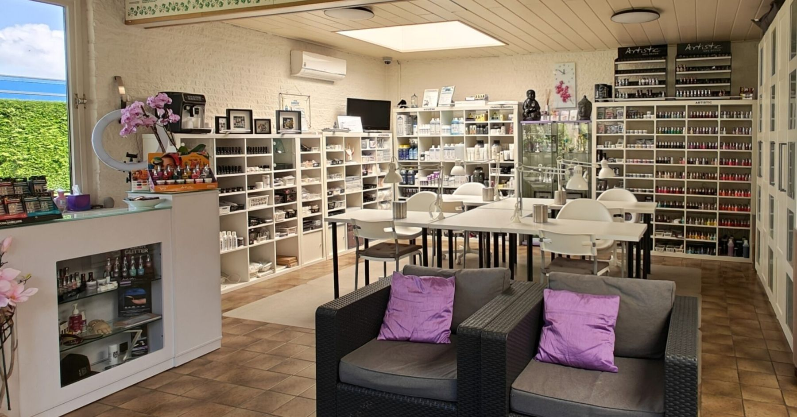
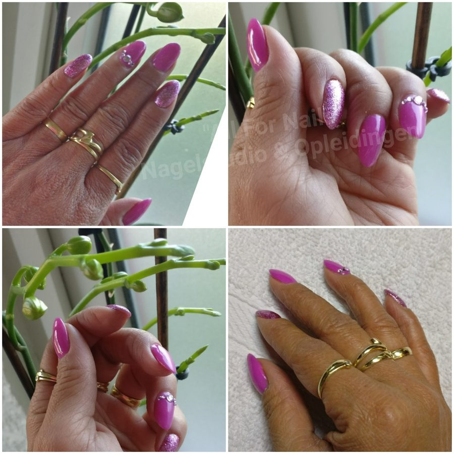
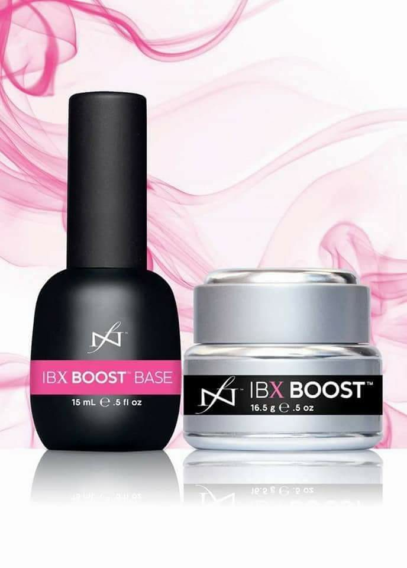
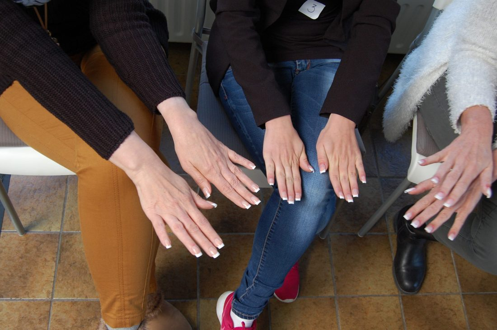
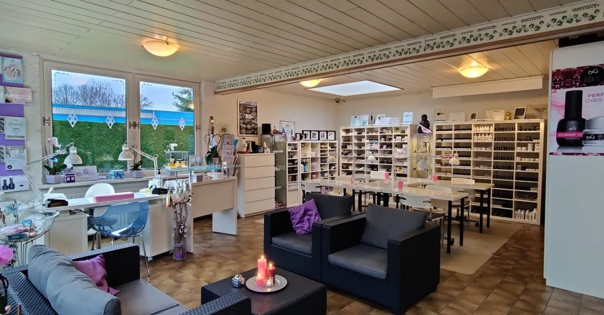

Acryl- en gelnagels
Sterke, natuurlijk ogende kunstnagels, gezet met acryl of gel.
Meer info
Nagelstudio en opleidingen in Sprundel. Sinds 2005 zetten we acryl, gel en gelpolish, en leiden we nagelstylistes op in privélessen op maat.
Van kunstnagels tot het herstellen van uw eigen nagels. Twijfelt u wat bij u past? Vraag het gerust, we denken graag mee.

Sterke, natuurlijk ogende kunstnagels, gezet met acryl of gel.
Meer infoDe klassieke witte of gekleurde rand op een natuurlijke roze basis.
Meer infoDirect droog en minimaal 2,5 week mooi gelakte nagels.
Meer infoVan een eenvoudig design tot 3D en complete handpainting.
Meer infoVersteviging en reparatie van scheurtjes in de natuurlijke nagel.
Meer infoVoor zwakke of beschadigde nagels die weer sterk moeten worden.
Meer info Lees meer over de IBX behandeling
IBX herstelt beschadigde nagels en maakt natuurlijke nagels sterker. Het werkt ín de nagel in plaats van erop: onder LED- of UV-licht vormt het een netwerk in de bovenste lagen, te vergelijken met een steunkous.
All For Nails is IBX-gecertificeerd en geeft als IBX Educator ook de IBX-opleiding aan salons.
Wilt u een goede, professionele nagelstyliste worden? Bij All For Nails volgt u uw opleiding in privéles, op maat en met veel persoonlijke aandacht van een gediplomeerde en ervaren docente.
U krijgt niet alleen praktijkles, maar ook theorie: de anatomie van de natuurlijke nagel, hygiëne en veiligheid in uw salon en een goede werkhouding. Want kennis is een heel belangrijk onderdeel van het vak.

Voor startende stylistes, als omscholing of als Basic Pro. Ook pedicures zijn welkom bij diverse workshops.
Vraag de opleidingsbrochure aan of plan samen een datum die u uitkomt.
Ik ben Jozephine Frijters. Ik was directiesecretaresse, maar wilde iets met schoonheid doen dat ik kon combineren met de kinderen. Sinds november 2005 ben ik gediplomeerd nagelstyliste, en sinds 2008 geef ik zelf les.
Ik blijf mezelf bijscholen: Anatomie & Pathologie deel 1 en 2, Train the Trainer en in 2022 de trainingen van nagelwetenschapper Doug Schoon. Allemaal om u beter te kunnen helpen en adviseren, en vooral om de natuurlijke nagel gezond te houden.
"Kennis is macht."Ons motto, in de studio en in elke opleiding

In onze webshop vindt u de producten waarmee we zelf werken en lesgeven, voor professionele salons.
Prijzen zijn zichtbaar voor salons met een KvK-nummer. IBX leveren we alleen aan IBX-gecertificeerde salons. Gratis verzending vanaf € 100.
Voor een behandeling, een opleiding of een vraag over producten: bel of app gerust.
We plannen samen een moment dat u uitkomt. Wilt u nailart? Laat het even weten, dan houden we er rekening mee.